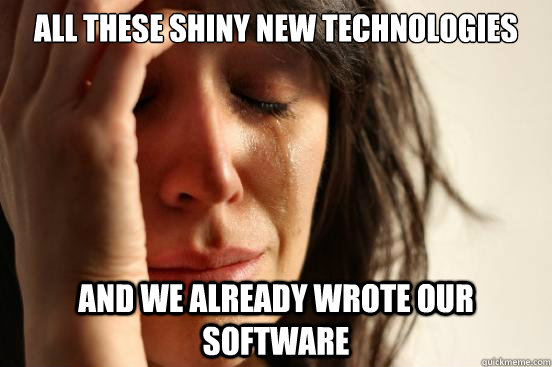

Strange Loop 2012
BBQ in STL
Anything we write that doesn't give us a competitive advantage, we plan on open sourcing from the start.
Design by removing problems not by adding features
I used to think programmers were recipe makers, now I believe that programmers are abstractioners
Writing software is only a fraction of the process. We spend more time
reading software and thinking about it. The best remedy to this is to
better abstract and forget about the logic and functionality.
I don't think the problem with programming is that we aren't doing it fast enough.
Thoughts:
- Tests are not the answer, just a stopgap until a better solution comes up
- The web is about to (or is currently) undergoing its own renaissance
- We need to streamline our development environment differently, we spend more time editting/reading code than writing
ECMAScript 6 (Javascript):
Including: Actual classes (minimal form), actual importing of modules (think node but client side oriented), symbols, defaults in arguments, wildcard arguments, iterators/generators, promises (async callback system), built in advanced data types (sets, maps, etc).ES6
// module.js
module Example {
export function hello(target = "World") {
console.log("Hello " + target);
};
}
// main.js
import { hello } from "module.js";
hello(); // "Hello World"
hello("Steve"); // "Hello Steve"
AngularJS
AngularJS is a client side web app framework written by Google. It is in the same vein as things like BackboneJS and KnockoutJS. Rather than relying heavily on Javascript configuration, it uses HTML attributes to apply a lot of built in goodies (validation, dynamic mapping of data models) through its templating system.Angular
http://jsfiddle.net/cxxU7/Go
Go is a language created by Google for their infrastructure, emphasizing concurrency. Written by Rob Pike and Ken Thompson, it tries to bring in parts from modern dynamic languages while getting the speed of compiled languages.Go normal
package main
import (
"fmt"
"time"
)
func main() {
fmt.Println("Timer 1: 3s")
time.Sleep(3 * 1e9)
fmt.Println("Timer 1 done")
fmt.Println("Timer 2: 1s")
time.Sleep(1 * 1e9)
fmt.Println("Timer 2 done")
}
Go goroutines
package main
import (
"fmt"
"time"
)
func main() {
go func() {
fmt.Println("Timer 1: 3s")
time.Sleep(3 * 1e9)
fmt.Println("Timer 1 done")
}()
go func() {
fmt.Println("Timer 2: 1s")
time.Sleep(1 * 1e9)
fmt.Println("Timer 2 done")
}()
time.Sleep(4 * 1e9)
}
Voice Navigated Apps
Robert Van Loghem
He's Dutch
They built a voice controlled train route navigator.
Voice is faster than typing on a phone for complicated user input.
Bad Examples of Voice Navigation
-TV Volume Up
-Next page
-Continue
-We can do these faster with a button.
Good Examples
-I want to get from London to Paris.
-I want 3 hamburgers and 2 fries.
Considerations
-Use voice to get complicated context from simple strings.
-Don't worry about fancy language processing, just look for keywords.
-Add support for hard to do but common tasks.
-Define a clear vocabulary for your app and provide examples.
-Don't mimic your normal user flow.
Use in Compass
-I want to arrive one day before the show and leave the last day.
-I want a king bed and early arrival.
Cross Browser Testing with BrowserStack
Scott Gonzales
Project Lead for jQueryUI

jQuery is designed to be ran on Current Browsers and the Previous Revision, except for IE
They started off testing jQuery Mobile on physical devices and it was impossible to manage.
Even keeping everything charged was a nightmare.
BrowserStack supports multiple OS's, Broswers, and Mobile devices via emulators.
It's simply an Amazon VM with a Flash frontend.
Other Features
-It also has an in progress api for spinning up machines and making sure things render.
-They're working on having the api take screenshots for visual tests.
-It has a tunnel so you can also test local development.
Use in Compass
I've already used it to develop the mobile redirect.
I was able to test Chrome, IE, Opera, Safari, Iphone, Ipad, and many Android devices.
Lets Take a Look:
Price
$79/mo for 10 users, $169 for unlimited users.
Mongo Db Unsession
Jeffrey Galloway
Ansers.com
Quick hints I picked up:
-Mongo uses BSON, which is JSON with types.
-Mongo runs awfully on EC2 if you don't have enough memory and hit the disk for data.
-Never, ever run mongo in 32 bit mode.
-For error checking, regularlycheck getLastError if you care about your data.
-Store large documents instead of small loads.
-Mongo will use more ram and disk space compared to sql.
Visible Programming
Brett Victor
We are creating programs without seeing what they're doing at runtime
5 Things to aim for when designing an IDE.
Read the Language
-Make meaning transparent, explain in contest
Follow the Flow
-Make the flow tangeable and visible
-Make time tangeable and visible
See the state
-Show the data
-Show comparisons
-Eliminate hidden states
Create by reacting
-Get something on the screen as soon as possible
-Dump the parts bucket onto the floor
Create by abstracting
-Start constant, then vary
-Start with one, then make many
-Start concrete, then generalize
